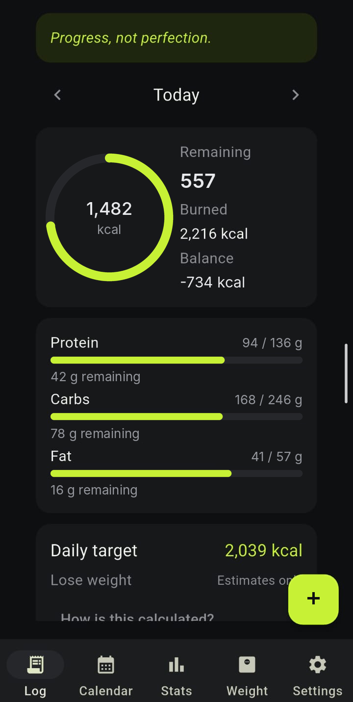
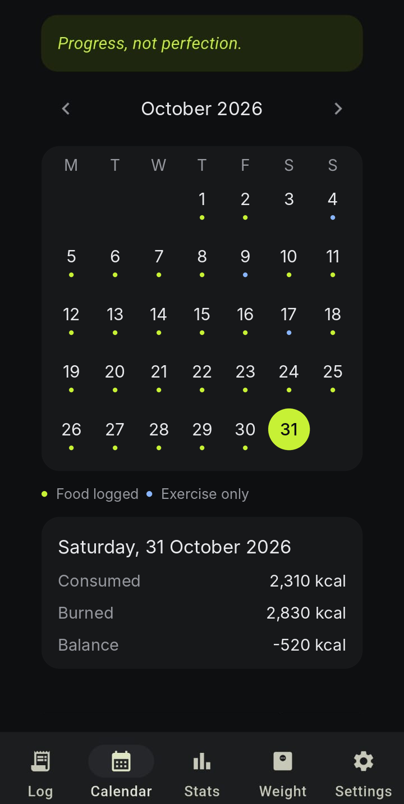
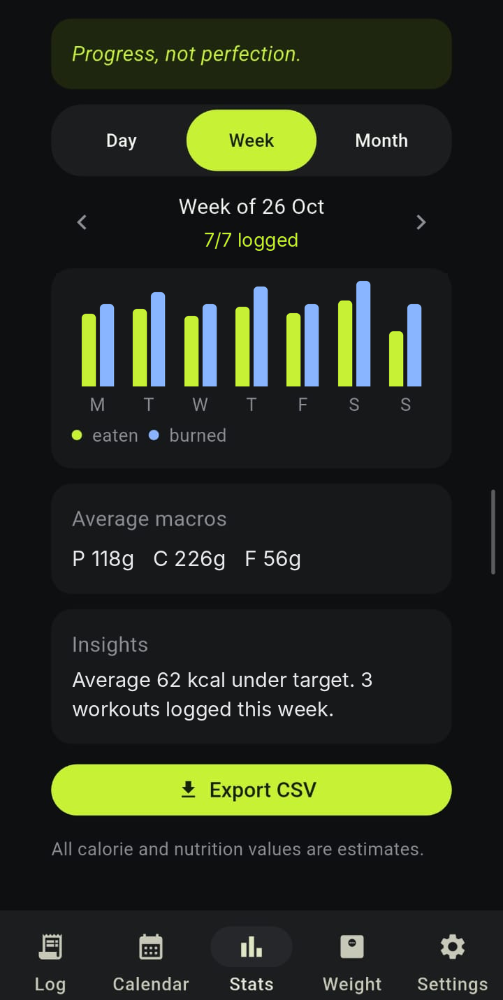
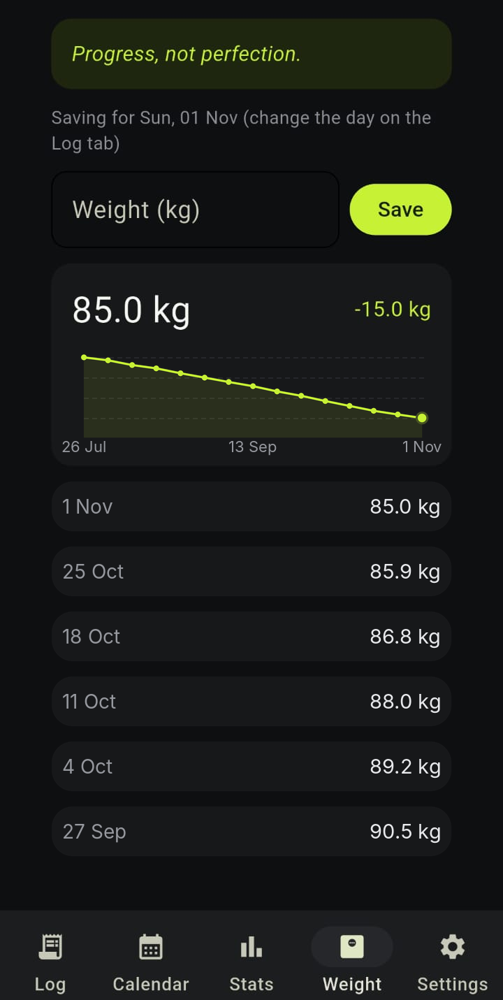
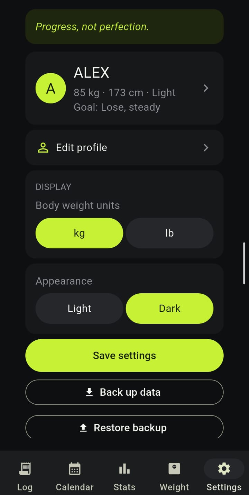

Food and meal log
Search foods, save custom items, choose serving sizes, assign meals and review a calorie estimate before logging.
A calorie and fitness tracker for logging meals, exercise and weight in one place. Built around clear estimates, simple daily tools and data the user can back up.

A real Android screen from the demo build. Example tracking values are shown.
Phone screenshots from the Android demo, shown in a consistent device frame.
Daily totals, nutrition progress and quick access to food or exercise entry.

Move through months and open a selected day to review its log.

Switch between day, week and month views, then export a CSV report.

Record weigh-ins and follow the trend when enough history is available.

Manage profile, units, appearance, and data backup or restore.
The app brings food, activity and progress tracking together without presenting estimates as medical advice.
Search foods, save custom items, choose serving sizes, assign meals and review a calorie estimate before logging.
Record an activity and duration to estimate exercise calories using the profile's weight.
Find logged days, review day, week or month summaries, and export a period as CSV.
Log weigh-ins, see a trend when there is enough history, and follow progress toward a goal.
Set up a profile, choose units and appearance, and adjust goals and nutrition targets.
Save a JSON backup and restore it with validation and a safety copy of current data.
The existing desktop tracker and the mobile-ready Flet app share the core calculations and data models.
Set up a profile.
Answer a guided set of questions; optional inputs can be skipped.
Log a day.
Add meals and exercise, then review the daily summary.
Review progress.
Use calendar, stats and weight history; export or back up data when needed.
Calculation logic is separated from the interface and covered by an automated test suite. The project includes both the desktop app and a mobile-oriented interface with Android build configuration. Download the source package above; an installable APK is not included yet.
A four-person team built and reviewed the calorie tracker together, with work shared across product direction, interface and calculation logic.
Led the project and coordinated the overall app development.
Helped with the app interface and front-end presentation.
Helped with backend work and calorie-engine development.
Helped with backend work and calorie-engine development.